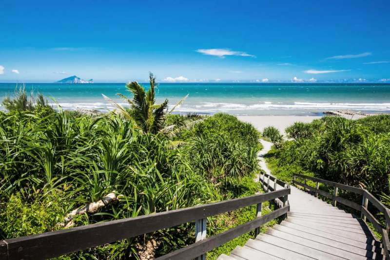

Top1
位在永鎮廟後方的永鎮海濱公園，除了擁有細緻的沙灘和海濱植物外，著名的海濱景點，與細膩的沙質，都很適合當做放鬆心情的地方，特別在清晨日出與黃昏時，就能見到許多攝影愛好者，搶拍龜山島的日出或火燒雲等美景，在木棧道的上方，也有一座東港榕樹公園，可以讓人休息。

Top2
海拔約140公尺處的南方澳觀景台，可鳥瞰南方澳、北方澳，還能夠欣賞大海與藍天連成一線的美景，西側翠綠的虎頭山、也能欣賞北側內埤海灣的水藍，豆腐岬的景色，另外三面環山的天然港灣，也能把地勢一覽無遺，把蘭陽的景色盡收眼底。
Top3
宜蘭濱海自行車北線的「北濱自行車道」，起點由東港榕樹公園往北，經過永鎮海濱公園到竹安河口，總長約14 公里，在車道兩旁種植的白色花朵，在海風的吹拂之下，伴隨在騎乘的過程中，沿途遼闊的太平洋、龜山島，都讓人能享受一趟愜意的單車小旅行。